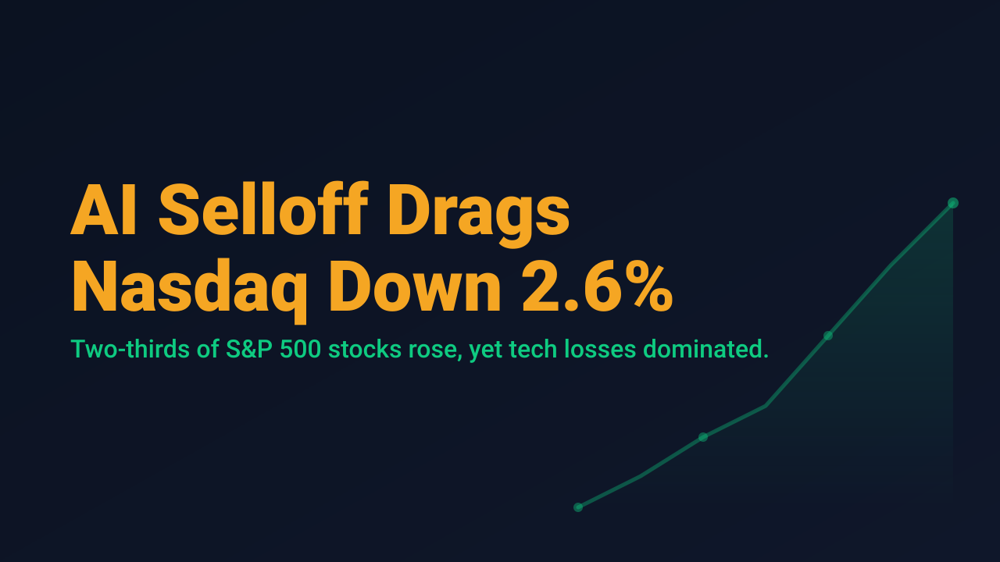
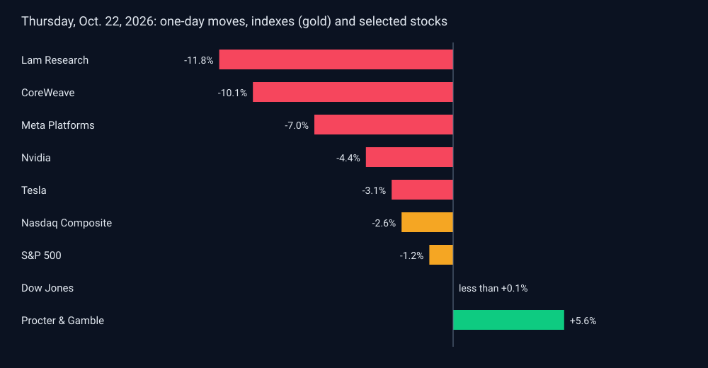

AI Selloff Drags Nasdaq Down 2.6%

U.S. equities closed sharply lower on Thursday, October 22, 2026, but the headline index moves understate how uneven the session was. The S&P 500 fell 1.2%, or 93.74 points, to 7,663.43, its worst day since July. The Nasdaq Composite dropped 2.6%, or 694 points, to 26,008.86. The Dow Jones Industrial Average, by contrast, rose 11.89 points to 52,867.98, a gain of less than 0.1%. According to the Associated Press, about two-thirds of S&P 500 stocks rose, but losses in large technology names overwhelmed them.
The pressure centered on artificial intelligence. Nvidia, the largest U.S. company by market value, fell 4.4% and was the single biggest drag on the S&P 500. CoreWeave dropped 10.1% amid concerns about its debt. Meta Platforms fell 7% despite stronger-than-expected revenue, after missing on profit and announcing a new class of stock to fund AI investments. Lam Research fell 11.8% even though it slightly beat expectations; its profit forecast midpoint came in slightly below analyst estimates, and the stock had been up 52.4% year to date. Tesla slipped 3.1%. Procter & Gamble, a defensive name, rose 5.6% after beating profit expectations and keeping its full-year forecasts.

The macro backdrop added to the strain. Brent crude rose 4% to $113.17 a barrel, its highest level in about five months, after starting October below $97, as uncertainty over the war with Iran kept energy markets unsettled. Meanwhile, the 10-year Treasury yield fell to 4.97% from 5.13% the previous day, and from above 5.30% earlier in the month, as investors bought Treasuries while AI shares sold off. The AP attributed the technology losses to worries that the cost of borrowing for data centers and chips could threaten the AI boom, along with concern that prices had risen too far after a multiyear rally.
For swing traders, the key observation is the divergence between index-level weakness and underlying breadth. A cap-weighted benchmark can fall sharply while most constituents advance, which means a decline in the index is not automatically a decline in the opportunity set. It also means that positions concentrated in the most crowded growth names carried disproportionate risk on a day when two-thirds of the S&P 500 rose.
Thursday's session is a reminder that index headlines compress a lot of information. Traders reviewing exposure ahead of the weekend may find it more useful to ask which holdings sit in the stressed AI complex and which sit in the broader market that held up, rather than treating the day as a uniform risk-off event.